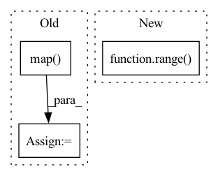

Pattern ID :32166

Before Change
bias_table["example_id"] = bias_table["example_id"].map(
lambda x: eval(x).decode("UTF-8")) // pylint:disable=eval-used
ids = np.concatenate(list(
ds.map(lambda example: example["example_id"]).batch(
batch_size).as_numpy_iterator())).tolist()
ids = list(map(lambda x: x.decode("UTF-8"), ids))
subgroup_labels = list(
ds.map(lambda example: example["subgroup_label"]).batch(
batch_size).as_numpy_iterator())
After Change
os.path.join(
os.path.join(output_dir, f"round_{idx}"), "bias_table.csv"))
predictions_merge = merge_subgroup_labels(ds, bias_table, batch_size)
for subgroup_id in range(num_subgroups):
prob_i = (predictions_merge["subgroup_label"]
== subgroup_id).sum() / len(predictions_merge)
round_idx.append(idx)
In pattern: SUPERPATTERN
Frequency: 3
Non-data size: 3
Instances
Fragment ID: 94124494
Project Name: google/uncertainty-baselines
Commit Name: f5b53459d654b40668528e806a24776b53864278
Time: 2022-11-03
Author: no-reply@google.com
File Name: experimental/shoshin/evaluate_model_lib.py
M Class Name: AnonimousClass
N Class Name: AnonimousClass
M Method Name: evaluate_active_sampling(5)
N Method Name: evaluate_active_sampling(4)
M Parent Class:
N Parent Class:
M File Name: experimental/shoshin/evaluate_model_lib.py
N File Name: experimental/shoshin/evaluate_model_lib.py
M Start Line: 34
M End Line: 59
N Start Line: 68
N End Line: 92
'>
Before Change
train_ds, batch_size=args.batch_size, shuffle=False, drop_last=True
)
dev_ds = dev_ds.map(trans_func, lazy=True)
dev_batch_sampler = BatchSampler(dev_ds, batch_size=args.batch_size, shuffle=False, drop_last=True)
batchify_fn = DataCollatorWithPadding(tokenizer)
After Change
train_ds = train_ds.map(trans_func, lazy=False)
repeat_data = []
for i in range(10):
repeat_data.extend(train_ds.new_data)
train_ds.new_data = repeat_data
train_batch_sampler = DistributedBatchSampler(
'>
Fragment ID: 94124504
Project Name: paddlepaddle/paddlenlp
Commit Name: a0699315b5f5e71472237852998cc1e970d361b4
Time: 2023-02-13
Author: 50394665+JunnYu@users.noreply.github.com
File Name: tests/test_tipc/benchmark/modules/ernie3_for_sequence_classification.py
M Class Name: Ernie3ForSequenceClassificationBenchmark
N Class Name: Ernie3ForSequenceClassificationBenchmark
M Method Name: create_data_loader(2)
N Method Name: create_data_loader(2)
M Parent Class: BenchmarkBase
N Parent Class: BenchmarkBase
M File Name: tests/test_tipc/benchmark/modules/ernie3_for_sequence_classification.py
N File Name: tests/test_tipc/benchmark/modules/ernie3_for_sequence_classification.py
M Start Line: 72
M End Line: 95
N Start Line: 128
N End Line: 132
'>
Before Change
pkg_resources.resource_filename("bert-squeeze", f"data/{self.dataset_config.name}_dataset.py"),
self.dataset_config.split
)
tokenized_dataset = dataset.map(
lambda x: self.tokenizer(x[self.dataset_config.text_col], padding="max_length", max_length=self.max_length,
truncation=True)
)
tokenized_dataset.set_format(type="torch", columns=["input_ids", "token_type_ids", "attention_mask", "id"])
return DataLoader(tokenized_dataset["train"], collate_fn=_collate_fn(), batch_size=self.batch_size,
drop_last=True, num_workers=0)
After Change
)
else:
dataset = datasets.load_dataset(self.dataset_config.name, self.dataset_config.split)
dataset = dataset["train"].select(range(self.dataset_config.max_samples))
logging.info("Featurizing hard dataset for labeling.")
featurized_dataset = self.featurize(dataset)
'>
Fragment ID: 94124497
Project Name: julesbelveze/bert-squeeze
Commit Name: 737c3ff9fbb4c2eaa195c8fd094ee417d6ec358c
Time: 2021-10-26
Author: 32683010+JulesBelveze@users.noreply.github.com
File Name: bert-squeeze/distillation/utils/labeler.py
M Class Name: HardLabeler
N Class Name: HardLabeler
M Method Name: get_dataloader(1)
N Method Name: get_dataloader(1)
M Parent Class: object
N Parent Class: object
M File Name: bert-squeeze/distillation/utils/labeler.py
N File Name: bert-squeeze/distillation/utils/labeler.py
M Start Line: 31
M End Line: 40
N Start Line: 64
N End Line: 77